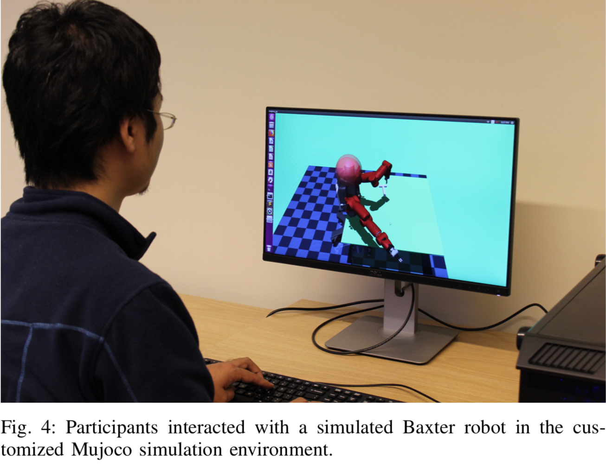

EE599 Guest-Lecture on Reinforcement Learning
Created by Jiali Duan on April 8th, 2020
- Recap of RL formulations
- An interdisciplinary example
- Competitive self-play
What's reinforcement learning?
End-to-end learning for Sequential Decision Making

What does end-to-end mean for
Sequential Decision Making?

More formally!
Comparison with deep learning framework

Short Summary (DRL)
- RL originates from the need for sequential decision making process
- DL is analogous to one state of the "sequence"
- DL allows RL to solve complex problems end-to-end
Why do we care about it now?
Mathematical Notations
The goal of reinforcement learning
Categorization
- Value-based: Indirectly optimize policy via estimation of value function
- Policy gradients: Directly optimize policy by calulating gradient of policy
- Actor-critic: Combination of above two
Value Iteration
Policy Gradients

Policy Gradients
$ U( \theta )=E[ \sum_{t=0}^{H}R(s_{t},u_{t});\pi_{\theta}]=\sum_{ \tau }P(\tau;\theta)R(\tau)$
$\bigtriangledown _{\theta}U( \theta )= \bigtriangledown _{\theta}\sum_{ \tau }P(\tau;\theta)R(\tau)=\sum_{ \tau }\bigtriangledown _{\theta}P(\tau;\theta)R(\tau) $ $ =\sum_{ \tau }\frac{P(\tau;\theta) }{P(\tau;\theta) } \bigtriangledown _{\theta}P(\tau;\theta)R(\tau) $ $=\sum_{ \tau }P(\tau;\theta)\frac{\bigtriangledown _{\theta}P(\tau;\theta) }{P(\tau;\theta) }R(\tau) $ $ =\sum_{ \tau }P(\tau;\theta)\bigtriangledown _{\theta}logP(\tau;\theta)R(\tau) $ $= \frac{1}{m} \sum_{i=1}^{m}\bigtriangledown _{\theta}logP(\tau^{(i)};\theta)R(\tau^{(i)})$
Policy Gradients
# Given:
# actions - (N*T) x Da tensor of actions
# states - (N*T) x Ds tensor of states
# q_values – (N*T) x 1 tensor of estimated state-action values
# Build the graph:
logits = policy.predictions(states) # This should return (N*T) x Da tensor of action logits
negative_likelihoods = tf.nn.softmax_cross_entropy_with_logits(labels=actions, logits=logits)
weighted_negative_likelihoods = tf.multiply(negative_likelihoods, rewards)
loss = tf.reduce_mean(weighted_negative_likelihoods)
gradients = loss.gradients(loss, variables)
$\frac{1}{m}\sum_{i=1}^{m}\sum_{t=1}^{T}\bigtriangledown _{\theta}log(\pi_{a_{i,t}}|s_{i,t};\theta)\widehat{R_{i,t}}$
Actor Critic
What have we come so far?
Getting Serious
Look Before You Leap: Bridging Model-Free and Model-Based Reinforcement Learning for Planned-Ahead Vision-and-Language Navigation
Task description
Model Pipeline

Components

# Recurrent policy model
e(t,i)=tf.matmul(h(t-1).transpose(),w(i))
a(t,i)=tf.exp(e(t,i))/tf.reduce_sum(tf.exp(e(t,k)), axis=1)
c(t)=tf.reduce_sum(a(t,i)*w(i))
h(t)=LSTM(h(t-1),[c(t),s(t),a(t-1)])
# Environment model
s(t+1)=fransition(fproj(st,at))
r(t+1)=freward(fproj(st,at))
Model Learning
Two step training process
- Pretrain environment model
- Freeze environment model and train policy model
# Imitation learning
Train environment model with Randomized teacher poclicy;
Pick demonstration policy with P=0.95;
Pick Bernouli Meta policy with P=0.05;
l_transition=E[s'(t+1)-s(t+1)]
l_reward=E[r'(t+1)-r(t+1)]
# Policy learning
r(st,at)=distance(s(t))-distance(s(t+1))
R(st,at)=discounted total sum of r
Perform REINFORCE algorithm on R
Result
Course Project of Jiali DuanSummary
- Combine model-free and model-based method via "imagination"
- Integrate vision with language instruction for indoor navigation
Competitive Self-Play
Motivation and Contribution
- Auto-curricula induced by competitive self-play
- Emergent behavior induced by this auto-curricula
- Successful transfer learning from this auto-curricula
Training Pipeline
- Shaped dense reward for locomotion skill learning
- Two separate PPO optimization process
- Dense reward annealing and Opponent sampling
A brief intro about TRPO & PPO
- PPO inherits from TRPO and simplifies
- PPO is a model-free off-policy actor-critic method
- PPO can solve continuous control problem
TRPO as constrained optimization
TRPO objective & constraint
TRPO pseudo-code
Extensions
- Hide-and-Seek extends Self-Play into multi-agent scenario
- Hide-and-Seek adds an exploration term
- Hide-and-Seek uses a more comprehensive policy network
Policy-Network Overview
Intrinsice Module
Summary
- More "comprehensive reward"
- More "data driven"
Finale
Robust Adversarial Grasping
Robot Learning via Human Adversarial Games (IROS 2019 Best Paper Finalist, USC News)


$r=R^{R}(s,a^{R},s^{+})-\alpha R^{H}(s^{+},a^{H},s^{++})$
Robust Adversarial Grasping
Robot Learning via Human Adversarial Games (Duan et al., 2019)

Robust Adversarial Grasping
Robot Learning via Human Adversarial Games (Duan et al., 2019)

Robust Adversarial Grasping
Robot Learning via Human Adversarial Games (Duan et al., 2019)
https://github.com/davidsonic/Interactive-mujoco_py